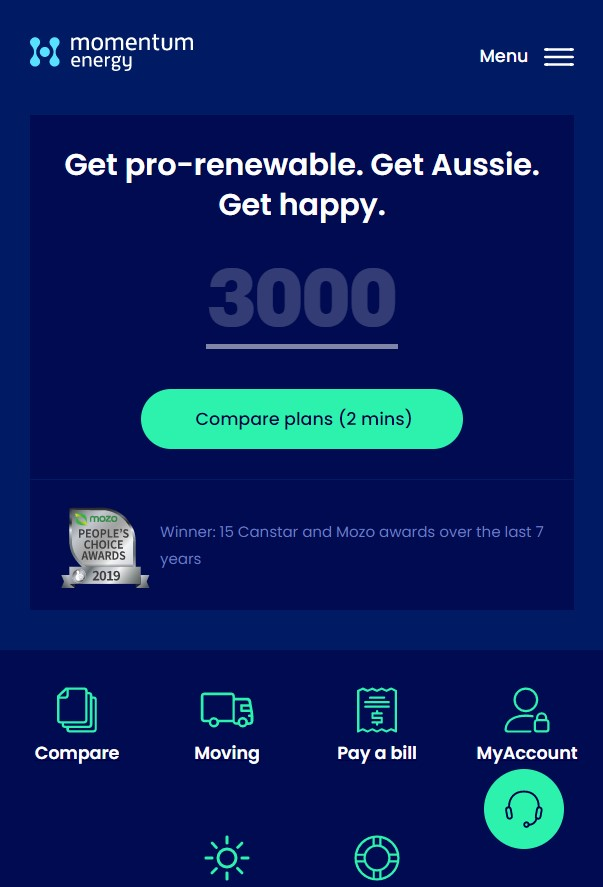

1. Contrast
Momentum Energy Website
Take a look at the website here Contrast is about attention. It is a way of giving more attention to one element detriment of another or even simply making information clear. Poor contrast can lead to confusion. The contrast becomes evident in this Momentum Energy site. The deep blue contrasts with the light green, making the page not only pleasant to look at, but information clear.
2. Visual Hierarchy
Meliuz Website
Take a look at the website hereVisual hierarchy is about giving each visual element attention corresponding to its importance in the message we want to convey. When well built, people's eyes naturally land on the most important elements at first, then traveling to the second most important piece of information and so on. This page makes clear the order of importance of elements, working especially with size and colors to come to this effect.
3. Repetition
Invertexto Website
Take a look at the website here
Repetition brings consistency to a website. This is I'm principal is used to guarantee that everything looks from parts of a whole. The invertexto site shows it by the way they repeat colors shapes and sizes.